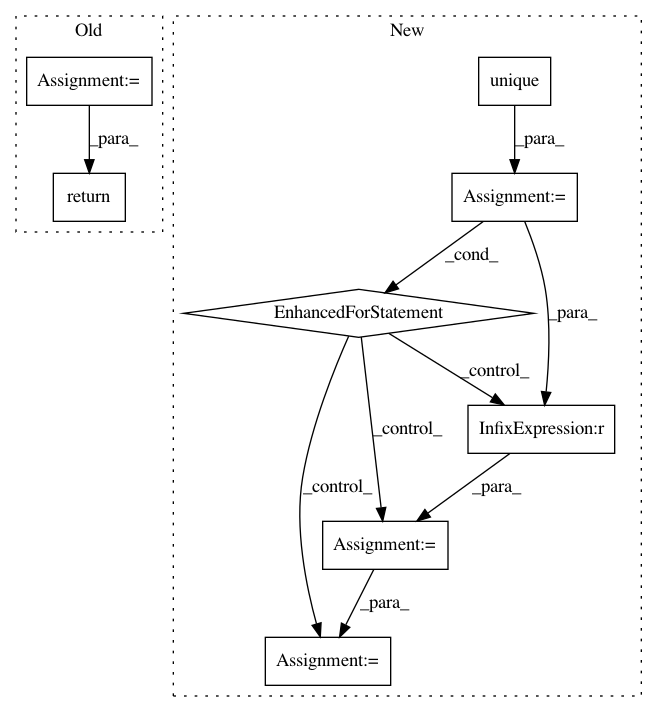

07151f59c3dffac71b78c183380ade4e999c50cb,pudl/clean_eia923.py,,yearly_to_monthly_eia923,#Any#Any#,7
Before Change
yearly = df.copy()
monthly = pd.DataFrame()
for m in md.keys():
// Grab just the columns for the month we"re working on.
this_month = yearly.filter(regex=md[m])
// Drop this month"s data from the yearly data frame.
yearly.drop(this_month.columns, axis=1, inplace=True)
// Rename this month"s columns to get rid of the month reference.
this_month.columns = this_month.columns.str.replace(md[m], "")
// Add a numerical month column corresponding to this month.
this_month["month"] = m
// Add this month"s data to the monthly DataFrame we"re building.
monthly = pd.concat([monthly, this_month])
// Merge the monthly data we"ve built up with the remaining fields in the
// data frame we started with -- all of which should be independent of the
// month, and apply across all 12 of the monthly records created from each
// of the // initial annual records.
return(yearly.merge(monthly, left_index=True, right_index=True))
After Change
yearly = df.copy()
all_years = pd.DataFrame()
for y in yearly.year.unique():
this_year = yearly[yearly.year == y].copy()
monthly = pd.DataFrame()
for m in md.keys():
// Grab just the columns for the month we"re working on.
this_month = this_year.filter(regex=md[m])
// Drop this month"s data from the yearly data frame.
this_year.drop(this_month.columns, axis=1, inplace=True)
// Rename this month"s columns to get rid of the month reference.
this_month.columns = this_month.columns.str.replace(md[m], "")
// Add a numerical month column corresponding to this month.
this_month["month"] = m
// Add this month"s data to the monthly DataFrame we"re building.
monthly = pd.concat([monthly, this_month])
// Merge the monthly data we"ve built up with the remaining fields in
// the data frame we started with -- all of which should be independent
// of the month, and apply across all 12 of the monthly records created
// from each of the // initial annual records.
this_year = this_year.merge(monthly, left_index=True, right_index=True)
// Add this new year"s worth of data to the big dataframe we"ll return
all_years = pd.concat([all_years, this_year])
return(all_years)
In pattern: SUPERPATTERN
Frequency: 3
Non-data size: 8
Instances
Project Name: catalyst-cooperative/pudl
Commit Name: 07151f59c3dffac71b78c183380ade4e999c50cb
Time: 2017-05-03
Author: zane.selvans@catalyst.coop
File Name: pudl/clean_eia923.py
Class Name:
Method Name: yearly_to_monthly_eia923
Project Name: minerva-ml/open-solution-data-science-bowl-2018
Commit Name: 1c1914df24c211aea45b42146940c9a7b770cbee
Time: 2018-07-19
Author: kamil.kaczmarek@neptune.ml
File Name: steps/preprocessing.py
Class Name: ImageReader
Method Name: transform
Project Name: rasbt/mlxtend
Commit Name: cec517350d259a4f49a58a769db784c248cfffa8
Time: 2021-01-08
Author: mail@sebastianraschka.com
File Name: mlxtend/evaluate/accuracy.py
Class Name:
Method Name: accuracy_score